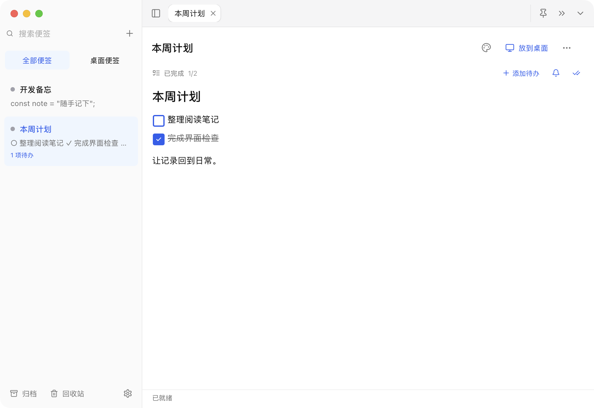

把正在用的清单放到桌面。忙完轻轻一收，便签就在屏幕边缘，点一下继续写。

把文字、代码和勾选项穿插在一起。为整张便签设一个提醒，到点从中心打开。
需要对照时置顶，暂时不用就收成胶囊。拖到屏幕边缘停靠，悬停即可查看摘要。
用收藏、标签和全文搜索找到便签。内容保存在本机，可以恢复历史版本，也能批量导出 Markdown。
Mac 用户可以在终端运行
brew install --cask zhong0118/tap/pinnote
macOS 下载 universal DMG，支持 Apple Silicon 和 Intel。Windows x64 选择 EXE 或 MSI。